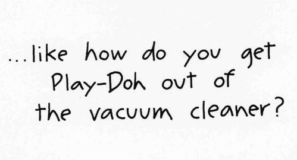

For: M.A. Hadley Pottery
Objective: Create new designs in the Hadley style. These new designs were based on existing patterns, but used in a new way.
Medium: Hand-glazed Stoneware
Involvement: Created the original thumbnails and samples, and painted all or most of plates produced during winter 2013.
For: M.A. Hadley Pottery
Objective: Create new designs in the Hadley style. These new designs were based on existing patterns, but used in a new way.
Medium: Hand-glazed Stoneware
Involvement: Created the original thumbnails and samples, and painted all or most of plates produced during winter 2013.
For: M.A. Hadley Pottery
Objective: Create new designs in the Hadley style. These new designs were based on existing patterns, but used in a new way.
Medium: Hand-glazed Stoneware
Involvement: Created the original thumbnails and samples, and painted all or most of plates produced during winter 2013.
For: M.A. Hadley Pottery
Objective: Create new designs in the Hadley style. These new designs were based on existing patterns, but used in a new way.
Medium: Hand-glazed Stoneware
Involvement: Created the original thumbnails and samples, and painted all or most of plates produced during winter 2013.
For: M.A. Hadley Pottery
Objective: Create new designs in the Hadley style. These new designs were based on existing patterns, but used in a new way.
Medium: Hand-glazed Stoneware
Involvement: Created the original thumbnails and samples, and painted all or most of plates produced.
Medium: Leaded Stained Glass
Involvement: Drew the 'cartoon' from a description of what the customer wanted. Enlarged the cartoon after approval, purchased materials and created the window.
Medium: Leaded Stained Glass
Involvement: I drew the 'cartoon' (small thumbnail sketch) of the window from description of what the customer wanted.
For: Private client
Objective: The customer wanted something more interesting than plain glass to fill a 9 foot by 5 foot expanse, and wanted a spider plant to be part of the window (rather than an actual plant in front of it.)
Medium: Leaded Stained Glass
Involvement: Enlarged the cartoon, purchased materials and created the window.
For: Private client
Objective: After installation, the customer told me that numerous people thought the spider plant was LIVE and hanging in front of regular window -- until, on closer inspection they realized it WAS the window!
Medium: Web Site Design
Involvement: Presented three wireframes of concepts to then director, Thomas Treacy. Built the one he chose in Dreamweaver.
For: Antonelli Institute, circa 2000
Objective: Develop Antonelli's first professional site. In 1999 the school's financial aid officer was running the site. Dr. Treacy wanted something that better reflected the school's art and photography programs.
Medium: Web Site Design
Involvement: Presented three wireframes of concepts to then director, Thomas Treacy. Built the one he chose in Dreamweaver.
Medium: Found Objects
Involvement: Created the original craft, and wrote the instructions. They also used the photo I sent in my submission in the magazine.
For: Highlights for Children
Objective: Create a simple craft project using (at the time) readily available (i.e. cheap to free) supplies - an empty film canister might be more difficult to acquire now!
Medium: Writing Workshop
Involvement: Generated the idea, set up the curriculum, and worked with about twenty 4th and 5th graders, for three 1 hour long sessions per workshop, annually between 1995 and 2003.
For: North Penn School District, Lansdale PA
Objective:The workshop taught students to look at a photo and develop a character by inventing who the person might be, then place the character the in a setting, and speculate how they might interact.

Medium: Writing Workshop
Involvement: Generated the idea, set up the curriculum, and worked with about twenty 4th and 5th graders, for three 1 hour long sessions per workshop, annually between 1995 and 2003.
For: North Penn School District, Lansdale PA
Objective: After developing characters, the students looked around the classroom to find details to use in their setting. Sometimes they started acting out their characters, and wrote a script instead of a short story!
Medium: Newspaper Article
Involvement: Wrote numerous Front page, business, lifestyles and special sections articles. Produced a bi-weekly family dining column reviewing local restaurants
For: The Reporter Newspaper, Landale
Objective: Find out the details surrounding various events (such as the Philadelphia Folk Festival, or a featured reading program) and deliver useful information on how to attend, what to bring (and what to avoid.)
Now that I'm a mother too, I realize there are some things you really should have taught me...
Medium: Greeting Card Copy
Involvement: The studio illustrated the card. I wrote the copy for the card (except the original version featured a cat, rather than Play-doh.)
For: Oatmeal Studios
Objective: To have fun brainstorming ideas, quickly, to get the creative juices flowing. Oatmeal Studios features quirky ideas, and submitting to them was fun.